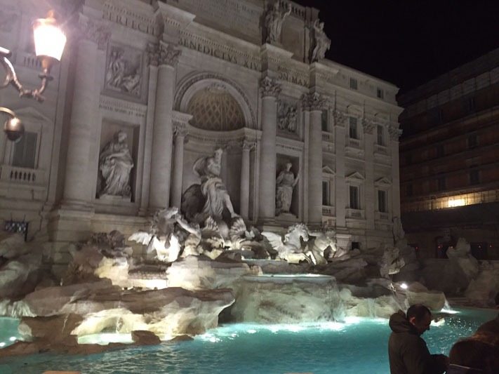
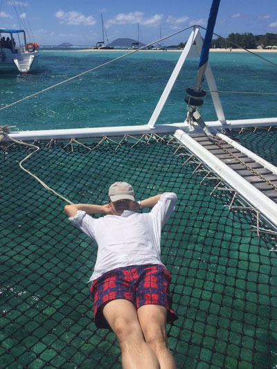
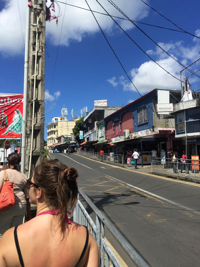
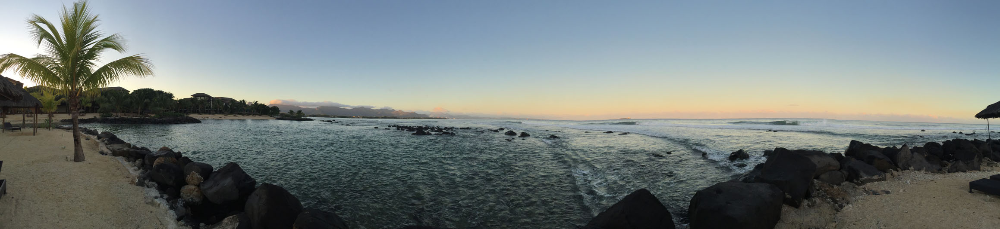
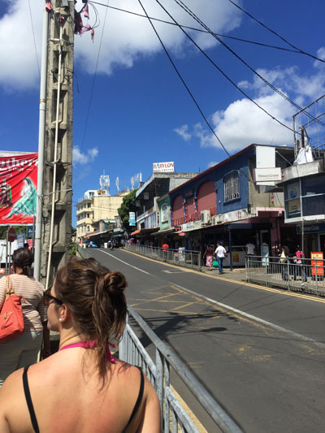
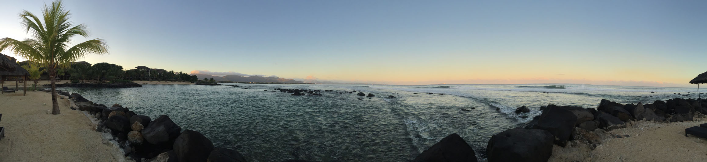

Hamburg, Germany
Hamburg is a quaint port city in northern Germany with a population of just over 1.7 million people. In the city's center there is a huge Central Park that wraps around 2 artificial lakes (Auβenalster). The park is stunning and I spent many days enjoying bear or coffee, sometimes both, in the cafés and restaurants that lined the park. Definitely a city I can see myself living in.


Rome, Italy
In Rome you can experience a history lesson around every corner. I was there for 2 weeks and that was not nearly enough! The sites, the sounds, the women. Hello!!!!
Lisbon, Portugaul
Lisbon was awesome! The food, the drink, the people, and the architecture. Wow, you really just have to experience it for your self.
Toronto, Canada
Toronto is like a second home for me. It's like New York City, Los Angeles, and Chicago rolled up into one. Except in Canada. You will find cuisine from all over the world, and in many respects more authentic cuisine from different countries then you can get in NYC. Toronto has the finest Cantonese cuisine you can find in all of North and South America.
Mauritius
Mauritius is a small island about 1,200 miles of the southeastern coast of Africa with a population of about 1.2 million people. The beaches are to die for, I've never seen such a clear ocean. I purposely didn't do any research before my trip and boy was I surprised! You would think that being so close to Africa, like Madagascar, the culture would be heavily influenced by Africa. But the island is instead heavily influenced by Indian culture.
 


